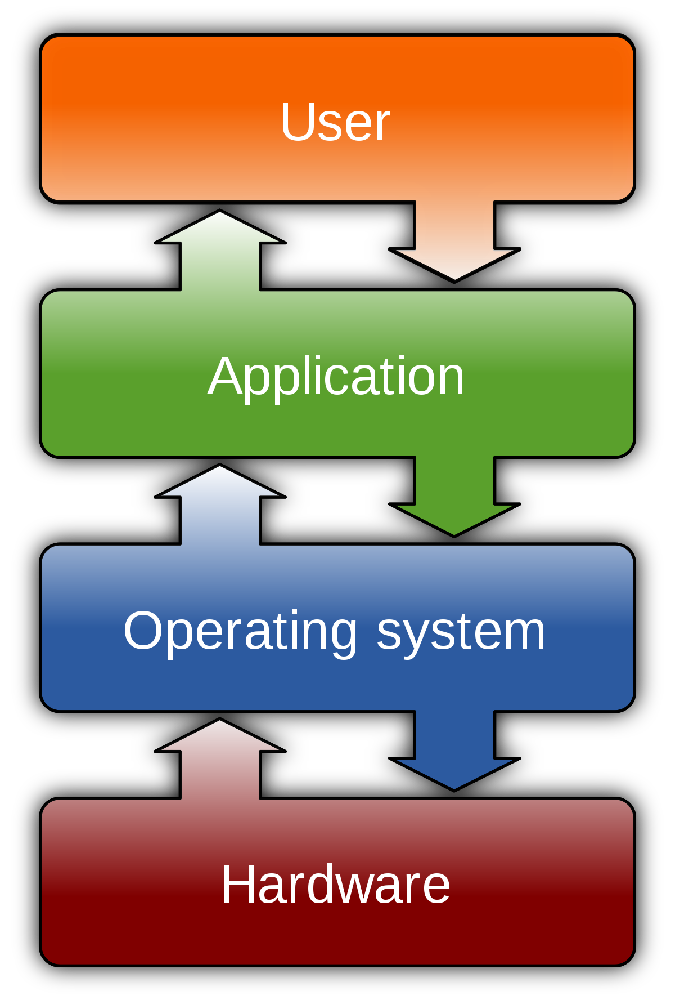

Purpose
As previously stated the Operating System acts as an intermediary between the hardware and software. Communication between software and hardware happens when functions such as input/output and memory allocation are called by the user. When there are multiple function calls, such as multiple programs wanting to run at same time, the Operation System steps in to coordinate and allocate the necessary resources to each program. The resources allocated are known as storage, memory, and CPU.
 Source